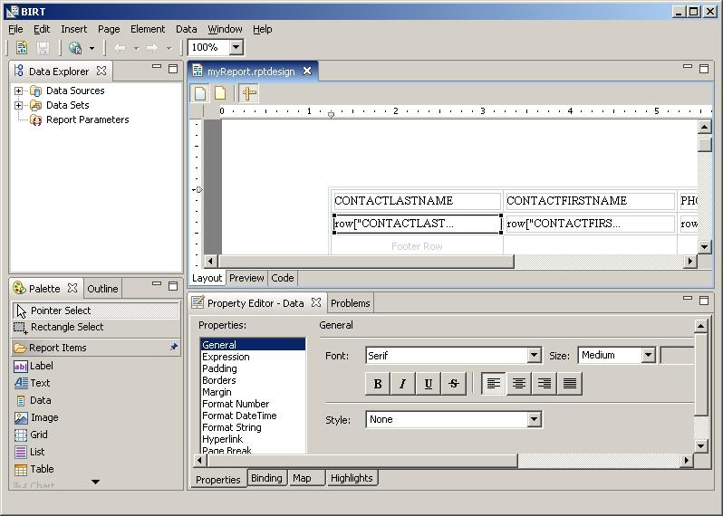
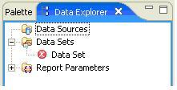
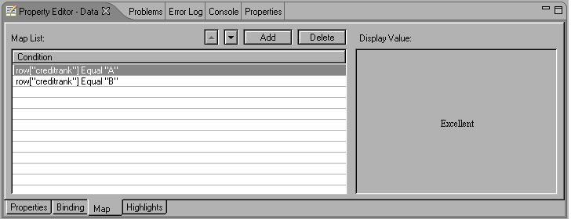
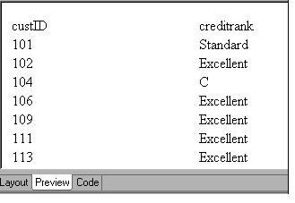

BIRT Project
New and Notable
BIRT 1.0.1 provides support for the Eclipse 3.1 platform release.
The Eclipse Rich Client Platform (RCP) enables ISVs and enterprise developers to leverage Eclipse technology to quickly create highly functional applications for their user community based on a common framework. BIRT 1.0.1 includes an example RCP implementation of BIRT that illustrates how RCP can be used to broaden the appeal and usage of BIRT technology. The BIRT RCP Report Designer is an example of providing a simpler tool that is dedicated to the task of report development – without the additional complexities of the IDE, which is unfamiliar to the typical report developer.
When a BIRT report has a problem detected in it, an error icon is displayed alerting the developer to the existence of the problem. For example, when the data source is deleted an error icon is displayed next to the dependent data set.

An easy way to map data values is now available in the property editor. For example, to map credit rank codes, "A" and "B" to “Excellent" and "Standard", you would use the Map feature, which is available as a tab under the property editor view, as shown in the following illustration.
When BIRT generates a report that displays values from the data column specified in the Condition, the defined Display Value is used in place of the actual data value. The report displays unmapped values without changing them, as shown in the following illustration.
The BIRT 1.0.1 Runtime Engine is now available as WAR file allowing it to be deployed in application servers.